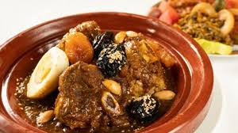

The Moroccan Tajine: A culinary Treasure
Moroccan cuisine is globally renowned for its rich and exotic flavors, and the tajine holds a special place in this culinary tapestry. Named after
the earthenware pot it is cooked in, the tajine is more than just a dish—it's an experience that represents Moroccan hospitality, tradition.
The tajine pot, with its conical lid, is designed to slow-cook ingredients, allowing them to stew gently in their juices, resulting in a tender
and flavorful meal. This method of cooking dates back centuries and reflects Morocco's deep connection to its culinary heritage. Tajines come
in many variations, featuring meats, vegetables, fruits, and a delightful mix of spices, often combining savory and sweet elements.
One classic and beloved version of the tajine is the Beef Tajine with Prunes and Almonds, a dish that perfectly balances tender beef, the
the sweetness of prunes, and the crunch of almonds.
ingredients:
- 1 kg of beef (preferably shank or shoulder)
- 2 large onions, finely shopped
- 3 galic cloves, minced
- 3 tablespoons olive oil
- 1 teaspoon ground ginger
- 1 teaspoon ground cinnamon
- 1 teaspoon turmeric
- 1/2 teaspoon black pepper
- Salt to taste
- 1/4 teaspoon saffron threads (optional)
- 1 stick of cinnamon
- 4 cups water
- 100g blanched almonds , fried or toasted
Preparation:
- Marinate the Beef:
- In a large bowl, combine the beef with garlic, ground ginger, turmeric, black pepper, cinnamon, saffron (if using), and salt.
- Massage the spieces into the meat and let it marinate for at least 30 minutes (or overnightin the refrigerator).
- Cooking the Tajine:
- In a large tajine pot or a heavy-bottomed pot, heat the olive oil over medium heat.
- Add the chopped onions and cook until softened and translucent.
- Place the marinated beef into the pot and brown it lightly on all sides.
- simmering
- Add the cinnamon stick and 4 cups of water to the pot. Cover and reduce the heat to low.
- Let the tajine simmer gently for 1.5 to 2 hours, or until the beef is tender. Check occasionally and add a little water if necessary.
- Preparing the prunes:
- In a small saucepan, simmer the prunes with a little water, and a pinch of ground cinnamon for about 10 minutes.
- Assembling:
- Once the beef is cooked, arrange the prunes on top of the meat in the tajine. Drizzle the prune syrup over the dish.
- Sprinkle toasted sesame seeds and almonds over the top.
- Serving:
-
Garnish with a boiled egg (optional) and serve the tajine hot, directly from the pot, accompanied by fresh bread